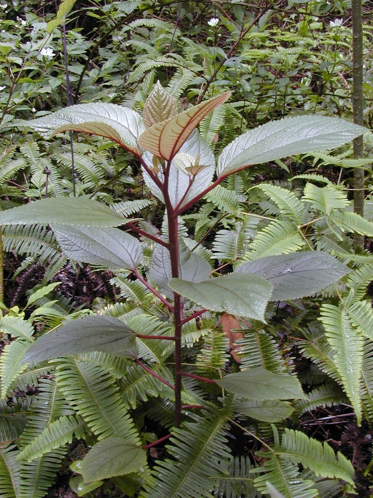
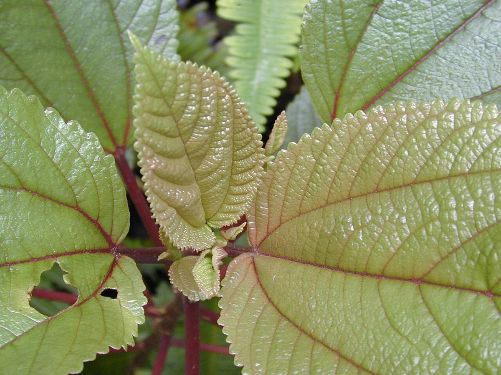

Pipturus albidus
māmaki · waimea pipturus, mamaki


Quick facts
| Family | Urticaceae |
|---|---|
| Scientific name | Pipturus albidus |
| Hawaiian name(s) | māmaki |
| English name(s) | waimea pipturus, mamaki |
| Status | Endemic |
| Conservation | — |
| Coastal zones | Valley mouth Riparian |
| Occurrence | Moist stream drainages reaching the coast at Nā Pali valley mouths; populations also in drier valleys where enough shade and seep water persists. On the Kauaʻi unpopulated coast, māmaki is most easily seen in the wetter valley-bottom forest just above the beach — not on open sea cliffs. |
How to identify
- Growth form
- Shrub to small tree 2–6 m, often multi-stemmed from the base with an open branching form.
- Size
- 2–6 m tall.
- Leaves
- Alternate, simple, ovate to elliptic, 5–15 cm long, with a rounded to subcordate base, an acuminate tip, and a serrate to crenate margin. **Diagnostic feature: three prominent veins emerge together from the leaf base** — a strong midrib and two lateral veins running a large fraction of the leaf length. Petiole often tinged reddish on younger growth. **Leaf underside is distinctly pale-whitish** (from a coating of fine hairs), an easy field mark: turn one over.
- Flowers
- Small greenish and inconspicuous, in dense compact clusters in the leaf axils; individually not showy.
- Fruit / seed
- Small white fleshy compound fruits — the tiny individual fruits fuse into a soft whitish cluster with dark seeds embedded in it. The compound cluster looks a bit like a small white berry with dark dots.
- Bark / stem
- Slender, grey-brown, smooth on younger stems.
- Where it sits on the coast
- Moist valley-bottom forest and stream margins at Nā Pali valley mouths; look for it just above the beach where a stream reaches the coast.
Clinchers (features that lock the ID)
- Three main veins emerging together from the leaf base (3-veined base).
- Leaf underside pale-whitish from fine hairs — flip a leaf to check.
- Small white fleshy compound fruit cluster in leaf axils.
- **No stinging hairs** — despite being in the nettle family (Urticaceae), māmaki is completely non-stinging. If your palm brushed a leaf and there was no sting, you have not ruled it out.
Look-alikes
- Introduced *Boehmeria* spp. and other Urticaceae — Introduced Urticaceae in Hawaiʻi generally lack the strong 3-veined base *plus* the pale whitish underside combination. Check both features together — either alone is not diagnostic. Some Boehmeria have serrate leaves with a pinnate venation pattern (one strong midrib, secondaries branching off it), which is different from māmaki's basal three-veined arrangement.
- Olonā (*Touchardia latifolia*, native endemic Urticaceae) — Olonā is smaller and its leaves are narrower and lack the conspicuous three-veined base of māmaki. Olonā's leaf venation is dominated by a single midrib. Olonā is not currently included in this guide but is worth knowing at Nā Pali valley bottoms.
- Introduced *Cecropia* ornamentals — Cecropia leaves are much larger and palmately lobed, with a clearly star-shaped outline. No confusion with māmaki.
Ecology
Hawaiian endemic in the nettle family (Urticaceae); occupies moist lowland-to-mesic forest across the main Hawaiian Islands. Larval host plant for the Kamehameha butterfly (*Vanessa tameamea*) — the presence of māmaki along a Nā Pali valley stream can indicate suitable Kamehameha butterfly habitat. [1], [2], [40], [41], [43], [44]
Cultural significance
Māmaki bark fibre was worked into tapa (kapa) cloth as a supplementary material to wauke (*Broussonetia papyrifera*, the primary bark-cloth plant). Leaves have long been brewed as māmaki tea, a tradition that continues today alongside a small commercial industry. Fruit is occasionally eaten. This guide names the traditional uses; the transmission of tea preparation and bark-fibre work belongs to Hawaiian cultural practitioners and to contemporary māmaki growers and educators.